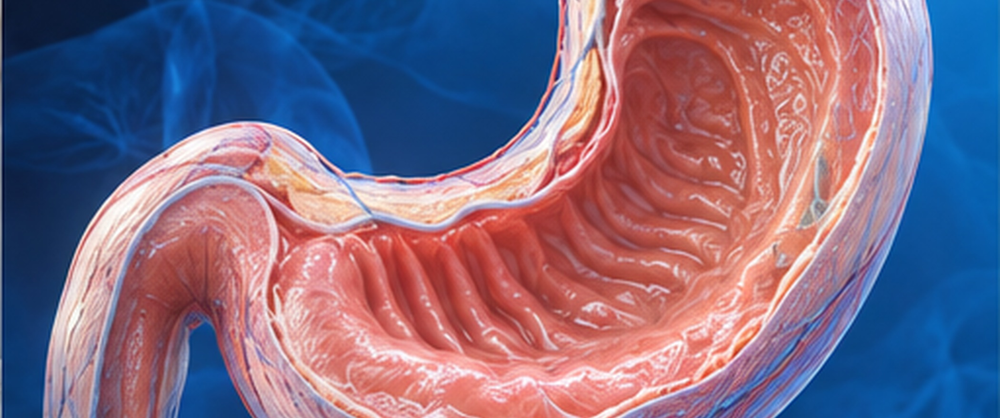
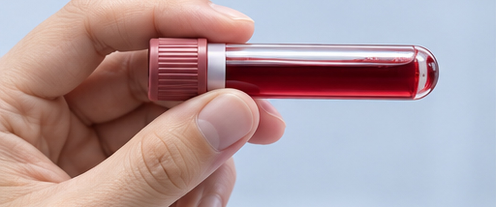
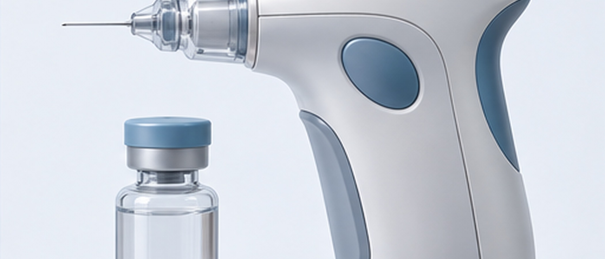
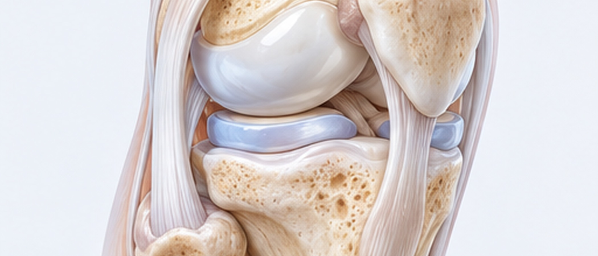

BAREUNSUP's Injectable Treatment
오진없는 정확한 진단으로
환자 한 분 한 분의 상태에 맞춘 치료를 해 드립니다.
꼼꼼하고 정확하게 진단해 잘못 판단하는 일이 없도록 하고, 환자마다 다른 상태에 맞춰 치료하고 있습니다.
치료받는 동안 불편함은 줄이고 빠르고 편하게 회복하도록 도와, 건강한 일상으로 돌아가실 수 있게 하겠습니다.
무릎관절염 주사치료
흔히 하는 관절내시경 치료는 찢어지거나 상한 연골판을 잘라 내거나 꿰매는 방법으로 이루어집니다.
그런데 연골판을 너무 많이 잘라 내거나 몸무게가 많이 실리는 안쪽을 잘라 내면 퇴행성 관절염이 더 빨리 올 수 있습니다.
관절내시경으로 하는 연골 재생술은 내 연골을 되도록 많이 남겨 둔 채 연골이 다시 자라도록 돕는 치료입니다.
이렇게 새로 자란 연골은 시간이 흐르면서 원래 내 연골처럼 그 자리에 단단히 자리를 잡습니다.
연골이 얼마나 다쳤는지에 따라 치료 방법이 달라집니다.
자가 골수 흡인 농축물 주사치료
자가 골수 흡인 농축물 주사치료
환자 자신의 골수에서 줄기세포와 성장인자가 많이 든 농축액을 뽑아, 무릎의 다친 조직에 주사해서 조직이 다시 자라고 회복되도록 돕는 비수술 치료입니다.
무릎 퇴행성 관절염이나 연골 손상, 힘줄 손상 같은 경우에 조직이 낫고 기능이 돌아오도록 돕는 데 씁니다.

특징

거의없음

긴 효과 지속

염증 완화

모두 가능
치료방법
PRP(성장인자) 주사 치료
PRP(성장인자) 주사 치료
환자 자신의 피에서 뽑아낸, 혈소판이 많이 든 혈장(Platelet-Rich Plasma)을 다친 조직에 주사해 조직이 다시 자라고 염증이 가라앉도록 돕는 비수술 치료입니다.
혈소판에는 조직이 낫고 다시 자라게 돕는 성장인자가 많이 들어 있어서, 힘줄·인대·근육·연골이 다친 여러 근골격계 질환을 치료하는 데 씁니다.

특징
거의 없음

비수술적 치료 지원

당일바로
모두 가능
치료방법
제대혈유래줄기세포치료
제대혈유래줄기세포치료
제대혈에서 얻은 줄기세포로 다친 관절 연골이 다시 자라도록 돕는 치료입니다.
무릎 연골이 떨어져 나갔거나 퇴행성 관절염이 있을 때 하며, 다친 연골 자리에 줄기세포를 넣어 연골 재생과 통증 감소를 함께 바랄 수 있습니다.

특징
통증 감소

관절 기능 개선

적용 가능
치료방법
콜라겐주사
콜라겐주사
관절 연골과 둘레 조직이 제 기능을 찾도록 콜라겐을 넣어 주는 치료입니다.
퇴행성 관절염으로 약해진 관절 속 환경을 좋게 바꾸고, 연골과 둘레 조직이 빨리 회복되도록 해서 통증을 줄이는 것이 목표입니다.

특징
비수술 치료
통증 완화
관절 환경 개선

시술 부담 적음
치료방법
어깨와 무릎을 다시 가볍게 움직이세요!
시술 경험이 많은 의료진의 실력입니다.
수많은 시술을 해 온 바른숲병원 의료진은 환자마다 상태를 꼼꼼히 따져 보고,
그에 맞는 치료법을 골라 좋은 결과로 이어지게 합니다.
초음파를 보며 놓는 주사는 일반 주사와 무엇이 다른가요?
초음파 주사치료는 초음파 장비로 주사 놓을 자리를 실시간 화면으로 보면서 약을 정확한 곳에 넣는 치료입니다.
그래서 초음파 주사치료는 일반 주사치료보다 더 정확하고 안전하며, 관절이나 힘줄이 다쳤거나 염증이 생긴 질환을 치료할 때 특히 더 잘 듣습니다.
무릎 연골은 한번 다치고 나면 다시는 자라지 않는 건가요?
퇴행성관절염은 관절이 부드럽게 움직이게 해 주는 연골이 닳아서 뼈끼리 쓸리면서 염증이 생기고 아파지는 질환입니다.
연골이 상한 퇴행성관절염이 무서운 까닭은, 연골에 혈관이 없어서 스스로 다시 자라지 못하고 많이 쓸수록, 나이가 들수록
더 닳고 뭉개져서 무릎을 움직이기가 점점 불편하고 아파진다는 데 있습니다.
관절 연골이 상하는 원인은 55세 이상에서는 80%가 퇴행성 변화이고, 20대에서는 4~10%쯤이 다쳐서 생기는 것인데
관절 연골은 다치면 저절로 낫지 않아 관절염으로 번집니다.
무릎에 물이 찼다고 들었어요… 한 번 빼기 시작하면 자꾸 빼야 한다던데 어떻게 하면 좋을까요? 물은 왜 차는 건가요?
관절 안에는 원래 관절액이 있어서 관절을 매끄럽게 움직이게 하고 연골에 영양을 주는 일을 합니다.
무릎에 물이 찼다는 것은 이 관절액이 많아졌다는 뜻으로, 대개는 관절염 때문에 생기는 일이 많습니다.
관절에 물이 차면 관절 주머니가 팽팽하게 부풀어 아플 수 있어서, 너무 많이 찼을 때는 빼 주는 편이 나을 때도 있습니다.
물이 자꾸 다시 차는 것은 뺐기 때문이 아니라, 물이 차게 만든 관절염이 아직 낫지 않았기 때문입니다.
전문가가 아닌 사람이 뽑으면 감염 같은 심각한 부작용이 생길 수 있으니 함부로 뽑아서는 안 되며,
관절 전문의가 필요하다고 판단할 때는 관절액을 뽑아 검사에 쓰기도 합니다.
일어설 때마다 무릎에서 뚝뚝 소리가 나고 통증이 있어요.
관절에서 나는 소리는 관절 안 압력이 바뀌면서 나는 경우(병뚜껑을 딸 때 나는 소리와 비슷한 원리)이거나
힘줄 같은 조직이 단단한 뼈 위를 넘어가면서 나는 경우(기타 줄을 튕길 때와 비슷한 원리)가 대부분이고, 뼈끼리 부딪쳐서 나는 소리는 그리 많지 않습니다.
보통은 아프지 않고 소리만 나는 경우가 많은데, 이럴 때는 굳이 검사까지 받지 않아도 되지만 되도록 소리가 나지 않게 하시는 것이 좋습니다.
다만 아프기까지 하다면 힘줄이나 인대, 연골 같은 조직이 쓸리거나 부딪치면서 다치고 있다고 볼 수 있으니, 관절 전문의에게 진료를 받아 보셔야 합니다.
무릎 수술 뒤 재활운동은 얼마나 해야 하나요? 수술 뒤에 조심해야 할 자세나 동작도 알고 싶어요.
어떤 수술을 받았는지, 나이와 몸 상태가 어떤지에 따라 다르지만, 대개 수술 뒤 1~2주는 조직이 아물 시간이 필요하고, 그 뒤로는 관절 둘레 근육을 키워 수술 부위를 지키고 회복을 돕는 재활운동을 한 달 안팎으로 하시도록 권합니다.
재활 기간을 채우는 것보다 관절을 넉넉히 받쳐 줄 만큼 근육을 튼튼하게 만드는 것이 더 중요합니다.
충분히 회복되기 전까지는 계단을 오르내리는 일이나 쪼그려 앉기, 양반다리처럼 무릎을 무리하게 굽히는 자세를 되도록 삼가 주세요.
연골주사를 맞으면 닳은 무릎 연골이 다시 채워지나요?
연골주사의 주성분은 히알루론산으로, 연골을 이루는 성분 가운데 하나입니다.
이 성분은 관절을 매끄럽게 움직이게 하고 관절 연골이 유지되도록 영양을 줍니다.
닳아 없어진 연골을 새로 만들어 주지는 못하기 때문에 말기 관절염 환자에게는 큰 도움이 되지 않습니다.
하지만 관절염이 초기나 중기라면 남아 있는 연골을 지키고 더 닳지 않게 해 주는 좋은 주사여서 정기적으로 맞으며 관리하시면 좋습니다.
연골을 다시 자라게 하는 줄기세포치료가 있다던데 나이가 많아도 받을 수 있나요?
관절염 등으로 연골이 없어졌을 때 저절로 건강한 연골이 다시 자라는 일은 아주 드뭅니다.
이런 연골을 의학적으로 다시 자라게 하는 방법이 줄기세포치료이며, 크게 자가줄기세포와 제대혈줄기세포 두 가지가 있습니다.
자가줄기세포는 본인의 골수나 지방에서 줄기세포를 뽑아 쓰며, 15~50세까지만 받을 수 있습니다.
제대혈줄기세포는 태반에서 얻은 줄기세포를 쓰는 방법으로, 나이 제한이 없어 나이가 많은 환자분도 받으실 수 있습니다.
두 줄기세포 모두 수술 방법과 성공률이 비슷하므로 상태에 맞는 줄기세포를 골라 치료하면 됩니다.
오십견은 그냥 둬도 저절로 낫는다던데… 꼭 수술을 받아야 하는 건지 궁금합니다.
오십견은 저절로 나을 수도 있는 병이라, 이론으로만 보면 기다리는 것도 하나의 치료 방법입니다.
하지만 통증이 심하고 옷을 입거나 씻고 밥을 먹는 등 기본적인 생활조차 힘들어서 환자분은 무척 괴로운 병입니다.
그래서 치료는 이런 불편을 줄이고, 되도록 오십견으로 고생하는 기간을 짧게 만드는 데 목적이 있습니다.
대개는 약이나 주사, 운동치료 같은 비수술 치료로 많이 좋아지며, 일부 환자분은 수면마취를 한 상태에서 굳은 관절을 풀어 주는 관절수동술을 받으시기도 합니다.
이런 치료로도 잘 낫지 않으면 관절내시경으로 오그라든 관절 주머니를 늘려 주는 수술을 하기도 하지만
대부분은 비수술 치료를 이어 가다가 나아지는 경우가 많아서 반드시 수술해야 하는 것은 아닙니다.
어깨가 자주 빠지는데 어떻게 하면 좋을까요?
어깨가 빠지는 것은 타고나기를 관절이 유연해서 생기기도 하고, 다쳐서 관절이나 인대가 상해 생기기도 하며, 두 가지가 함께 원인이 되기도 합니다. 힘줄이 다쳤거나 관절 주머니가 늘어난 것이 문제이므로, 인대와 힘줄을 튼튼하게 해 주는 프롤로 주사와 관절을 붙잡아 주는 근육을 키우는 운동치료로 관절을 안정시킬 수 있습니다. 이런 치료로도 나아지지 않는다면 MRI 같은 정밀검사를 해 본 뒤, 관절내시경으로 늘어난 관절 주머니를 보강하거나 다친 힘줄과 인대를 꿰매는 수술을 할 수 있습니다.
어깨에는 왜 석회가 생기나요? 충격파로 깨면 된다는데… 너무 아파서 걱정이에요.
어깨의 석회성건염은 일상생활이 힘들거나 자다가 깰 만큼 몹시 아픈 것이 특징입니다.
왜 생기는지는 아직 분명히 밝혀지지 않았으나, 나이 들며 힘줄이 낡아서 생기거나 어깨를 많이 써서 생기는 것으로 보고 있습니다.
먼저 소염제와 물리치료로 치료하고, 통증이 심하면 초음파 화면을 보며 주사해 염증을 줄입니다. 석회 자체를 없애려면 체외충격파나 내시경으로 치료합니다.
체외충격파는 물리적인 파동으로 석회를 잘게 부수고 피가 잘 돌게 해서 석회가 흡수되도록 하는 원리이고,
내시경치료는 관절내시경으로 석회를 직접 찾아내 기구로 걷어 내는 방법입니다.
의학적으로 석회가 다 없어질 때까지 꼭 치료해야 하는 것은 아니지만, 계속 아프다면 알맞은 치료를 이어 가시는 것이 좋습니다.
관절염 약을 먹으면 몸이 붓는다던데 맞나요? 글루코사민이 관절염에 도움이 되는지도 알고 싶어요.
흔히 쓰는 관절약의 부작용은 주로 속에 관한 것으로, 속이 쓰리거나 소화가 잘 안되거나 설사·변비가 생기는 일이 많습니다.
가끔 몸이 붓는 분들도 계신데, 대개 내분비계에 문제가 있는 여성분들인 경우가 많습니다.
체질상 어떤 약과 잘 맞지 않는 분이 있는데, 그 약을 다시 드시면 또 부을 가능성이 높으므로 어떤 약에서 이런 반응이 나타났는지
약 이름을 알아 두시는 것이 좋습니다. 흔히 쓰는 관절염 약 말고 스테로이드를 쓰는 경우도 있는데, 이때는 더 조심하셔야 합니다.
글루코사민은 연골을 이루는 성분 가운데 하나로, 연골을 유지하고 관절을 매끄럽게 하는 일을 합니다.
관절염에 효과가 있다는 보고는 많지만, 먹은 성분이 관절까지 간다는 의학적 근거는 아직 넉넉하지 않습니다.
고기를 많이 먹는다고 해서 근육질 몸이 되지는 않는 것과 비슷한 이치로 보시면 됩니다.
치료약이라기보다는 건강기능식품 정도의 의미가 있다고 생각하시는 편이 좋겠습니다.
손목이 자주 뻑뻑하고… 찌릿찌릿 저린 느낌이 자주 들어요
손목 안에는 손가락과 손목을 움직이게 하는 여러 힘줄과 인대가 지나갑니다.
다친 일이 없다면 대개 손을 많이 쓰는 일과 관계가 있는데요… 힘을 쓰는 일이 아니어도 집안일이나 컴퓨터 작업을 오래 하시는 분들도
이런 통증이 생길 수 있습니다. 손목 안으로는 신경도 지나가는데, 어느 한 곳에서 신경이 눌리면 손이 저리기도 합니다.
대표적인 것이 수근관증후군인데요… 상태에 따라 주사부터 수술까지 치료가 필요할 수 있습니다.
어떤 원인으로 생긴 증상인지는 전문의에게 진료를 받아 가려내야 합니다.
엄지발가락이 휘고 몹시 아픈데 어떻게 고치나요?
엄지발가락이 휘어 아프게 되는 흔한 질환으로 무지외반증이 있습니다.
뼈가 튀어나온 것처럼 보이지만, 실은 인대 때문에 뼈가 늘어선 모양이 바뀌어서 생기는 것입니다.
초기이거나 가벼울 때는 소염제와 족욕, 발에 맞는 신발로 증상을 줄일 수 있습니다.
하지만 중간 이상으로 휘었고 통증도 함께 있다면 수술로 모양을 바로잡는 것 말고는 방법이 없습니다.
발목을 자주 삐끗하는데 그때마다 퉁퉁 붓고 몹시 아파요.
발목염좌는 발목을 접질려 다친 것을 말하는데, 인대가 늘어난 정도일 수도 있고 찢어진 경우도 있습니다.
접질린 발목은 또 접질린다는 말을 흔히 듣게 되는데, 늘어나거나 다친 인대를 제대로 치료하지 않으면 늘어난 채로 남아서
자꾸 다치는 발목이 되기 쉽습니다. 처음 삐었거나 가볍게 다쳤다면 얼음찜질하고 부목을 대는 것만으로도 좋아질 수 있지만
오래 되풀이된다면 발목인대가 이미 오래전에 찢어졌을 가능성이 높고, 이대로 오래 두면 발목관절염처럼 좋지 않은 상태로 이어질 수 있으므로
진료와 검사를 받고 알맞게 치료하셔야 합니다.
발뒤꿈치가 아파요. 특히 아침에 걸을 때 많이 아픕니다.
족저근막염은 발뒤꿈치 바닥 쪽이 아픈 것이 특징이며, 아침에 일어나 첫발을 디딜 때 가장 많이 아픕니다.
등산이나 조깅, 마라톤 같은 운동, 오래 서서 하는 일, 평발이나 요족처럼 발 모양이 다른 경우, 과체중이나 비만이 원인이 됩니다.
원인을 없애는 것이 치료의 첫걸음이며, 처음에는 족욕과 스트레칭, 소염제로 나아질 수 있지만 오래된 경우에는 체외충격파치료가 잘 듣습니다.
팔꿈치가 많이 아파서 파스만 붙이면 괜찮을 줄 알았는데… 꽤 오래됐는데도 그대로예요.
팔꿈치가 아픈 흔한 원인으로는 골프 엘보우, 테니스 엘보우라고 부르는 내측·외측 상과염이 있습니다.
손을 많이 쓰는 일을 하거나 라켓을 쓰는 운동을 자주 하는 분들에게 잘 생깁니다.
손을 너무 많이 쓴 것이 원인이므로, 되도록 손을 덜 쓰는 것부터 치료가 시작됩니다.
먼저 약과 물리치료를 해 보고, 나아지지 않으면 주사나 체외충격파 치료를 더하며 필요하면 의료용 보조기도 씁니다.
심하면 다친 것이 아니어도 부목으로 고정하기도 합니다.
아침에 일어나면 손가락이 퉁퉁 붓고 마디마디가 쑤셔요. 류마티스 관절염은 아닐까요?
아침에 특히 손가락이 붓고 아프며 뻣뻣하게 굳는 느낌이 있다면 류마티스 관절염을 의심해 볼 수 있습니다.
피 검사 등으로 진단할 수 있고, 처음에는 흔한 관절염과 비슷하게 치료합니다.
류마티스는 자가면역 질환으로, 유전의 영향 말고는 뚜렷한 원인이 밝혀지지 않았습니다.
하지만 그냥 두면 연골이 망가지면서 관절염이 더 나빠지므로 꾸준히 관리하고 치료받으셔야 합니다.